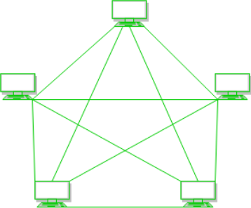
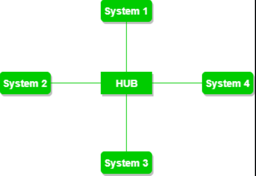
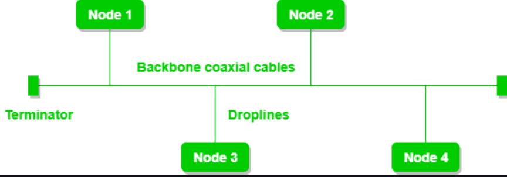
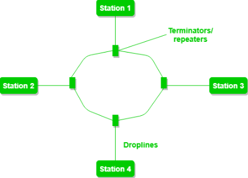
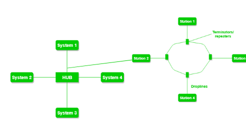

Расположение сети, которая включает узлы и соединительные линии через отправителя и получателя, называется топологией сети. Различные сетевые топологии являются:
Топология сетки: В ячеистой топологии каждое устройство подключено к другому устройству через определенный канал. В топологии Mesh используются протоколы AHCP (Ad Hoc Configuration Protocols), DHCP (Dynamic Host Configuration Protocol) и т.д.
Рисунок 1: Каждое устройство подключено к другому по выделенным каналам. Эти каналы известны как ссылки.
Предположим, что N устройств соединены друг с другом в ячеистой топологии, общее количество портов, которые требуются каждому устройству, равно N-1. На рисунке 1 показано 5 устройств, подключенных друг к другу, следовательно, общее количество портов, требуемых для каждого устройства, равно 4. Общее количество требуемых портов=N*(N-1).
Предположим, что N количество устройств соединено друг с другом в топологии сетки, тогда общее количество выделенных каналов, необходимых для их подключения, равно NC2, т.е. N(N-1) / 2. На рисунке 1 показано 5 устройств, подключенных друг к другу, следовательно, общее количество требуемых соединений равно 5 *4/2 = 10.
Преимущества этой топологии:
Проблемы с этой топологией:
Топология звезды: В топологии star все устройства подключены к одному концентратору с помощью кабеля. Этот концентратор является центральным узлом, и все остальные узлы подключены к центральному узлу. Концентратор может быть пассивным по своей природе, т.е. не интеллектуальным концентратором, таким как широковещательные устройства, в то же время концентратор может быть интеллектуальным, известным как активный концентратор. В активных концентраторах есть ретрансляторы. Для подключения компьютеров используются коаксиальные кабели или кабели RJ-45. В топологии Star используются многие популярные протоколы локальной сети Ethernet, такие как CD (обнаружение столкновений), CSMA (множественный доступ Carrier Sense) и т.д.
Рисунок 2: Звездообразная топология, имеющая четыре системы, подключенные к одной точке соединения, т.е. концентратору.
Преимущества этой топологии:
Проблемы с этой топологией:
Топология шины: Топология шины - это тип сети, в которой каждый компьютер и сетевое устройство подключены к одному кабелю. Он двунаправленный. Это многоточечное соединение и ненадежная топология, потому что при сбое магистрали происходит сбой топологии. В топологии шины различные протоколы MAC (Media Access Control) сопровождаются подключениями LAN ethernet, такими как TDMA, чистый Aloha, CDMA, щелевой Aloha и т.д.
Рисунок 3: Топология шины с общим магистральным кабелем. Узлы подключены к каналу с помощью линий отвода.
Преимущества этой топологии:
Проблемы с этой топологией:
Кольцевая топология: В этой топологии он образует кольцо, соединяющее устройства ровно с двумя соседними устройствами.
Ряд ретрансляторов используется для кольцевой топологии с большим количеством узлов, потому что если кто-то хочет отправить некоторые данные на последний узел в кольцевой топологии со 100 узлами, то данные должны будут пройти через 99 узлов, чтобы достичь 100-го узла. Следовательно, для предотвращения потери данных в сети используются ретрансляторы.
Данные передаются в одном направлении, т.е. они однонаправлены, но их можно сделать двунаправленными, имея 2 соединения между каждым узлом сети, это называется топологией двойного кольца. В кольцевой топологии протокол передачи токенов по кольцу используется рабочими станциями для передачи данных.
Рисунок 4: Кольцевая топология содержит 4 станции, соединенные каждая с образованием кольца.
Наиболее распространенным методом доступа в кольцевой топологии является передача токена.
Передача токена: Это метод доступа к сети, при котором токен передается от одного узла к другому узлу.
Токен: это фрейм, который циркулирует по сети.
В кольцевой топологии выполняются следующие операции:
Существует два типа методов освобождения токена: раннее освобождение токена освобождает токен сразу после передачи данных и отложенное освобождение токена освобождает токен после получения подтверждения от получателя.
Преимущества этой топологии:
Проблемы с этой топологией:
Древовидная топология : Эта топология является вариацией звездной топологии. Эта топология имеет иерархический поток данных. В древовидной топологии используются такие протоколы, как DHCP и SAC (стандартная автоматическая настройка).
Рисунок 5: На этом различные вторичные концентраторы подключены к центральному концентратору, который содержит ретранслятор. Эти данные передаются сверху вниз, т.е. от центрального концентратора к вторичному, а затем к устройствам, или снизу вверх, т.е. устройства к вторичному концентратору, а затем к центральному концентратору.Это многоточечное соединение и ненадежная топология, потому что при сбое магистрали происходит сбой топологии.
Преимущества этой топологии :
Проблемы с этой топологией :
Гибридная топология : Эта топологическая технология представляет собой комбинацию всех различных типов топологий, которые мы изучили выше. Он используется, когда узлы могут свободно принимать любую форму. Это означает, что это могут быть отдельные элементы, такие как кольцевая или звездообразная топология, или может быть комбинация различных типов топологий, рассмотренных выше. Каждая отдельная топология использует протокол, который обсуждался ранее.
Рисунок 6: На приведенном выше рисунке показана структура гибридной топологии. Как видно, он содержит комбинацию всех различных типов сетей.
Преимущества этой топологии :
Проблемы с этой топологией :